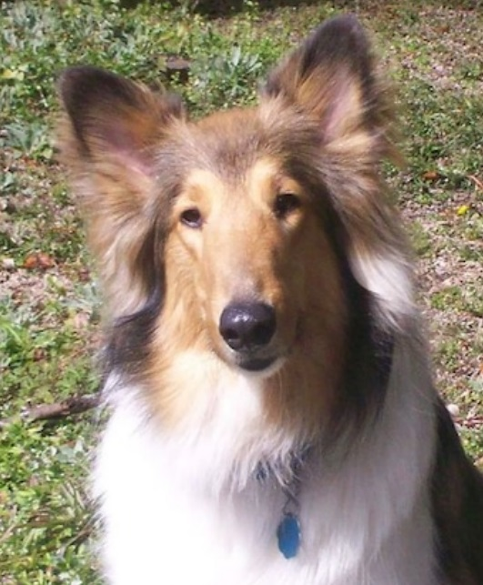

MURAL - Encontre Aqui Cães Perdidos
BEAGLE, , desapareceu de casa a 2 dias, Por favor ajudem. Ele precisa de medicamentos contínuos ele é Cardíaco.
Desapareceu prox. Metrô Paulista. Atende pelo nome de Toby. Entrar em contato com 7777-7777 - Rose

BULL- Cachorro encontrado na Lapa - SP, muito dócil, estava muito assustado. Contato com Fábio - 8888-9999

COLLIE- Perdi um cão dia 28 na rua Julia Rica as 17:00h, ele esta na minha família ha 4 onze anos. Obrigado !
Contato com Luis - 7788-9999
